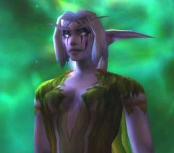

Guildes
Paix Eternelle (la)
Aërwen
Age : 2500 ansSexe : Femme
Race : Elfe
Faction : Alliance
Formation : Druide
Plus d'infos sur Aërwen >>>
Lire les 8 récits de Aërwen >>>
Jorian
 Age : 31
Age : 31
Sexe : Homme
Race : Nain
Faction : Alliance
Formation : Chaman
Description : Jorian est un homme bon et ordinaire, ayant subie une extraordinaire épreuve. Il en a retiré un surnom, "l'Oubli". Il a tissé et détruit des liens dont il ignore presque tout.
Et aujourd'hui il cherche à servir la Lumière, tant bien que mal...
Plus d'infos sur Jorian >>>
Lire les 63 récits de Jorian >>>
Kron
Age : 31Sexe : Homme
Race : Humain
Faction : Alliance
Formation : Voleur
Plus d'infos sur Kron >>>
Shoam
Age : 24Sexe : Homme
Race : Humain
Faction : Alliance
Formation : Paladin
Description : Shoam est né en Lordaeron, dans les plaines de Tirisfal. Son père, Ankamun Stonewisper, était un fier paladin de la Main d'Argent sous les ordres d'Uther Lightbringer, sa mère etait la baronne Agamand, des moulins de Tirisfal.
Shoam a vecu toute son enfance une vie d'abondance et de bonheur, en compagnie de sa petite soeur, Kormina, et de son meilleur ami Tolonan, ainsi que sa soeur Gylianell. Il a preté serment a la lumiere dans le Monastere de la Lumiere, non loin de chez lui, et pendant plusieurs années a tout fait pour devenir un aussi bon paladin que son père.
Lors de ses dernieres années sur les terres du nord, il dut partir à Stormwind pour parfaire son experience au combat directement sur les anciennes terres des orcs. Il y resta 6 mois, lorsqu'il appris la nouvelle : Lordaeron a été envahi par le fléau. Tout le monde a été massacré, la capitale est tombé, tout est a feu et à sang.
Le monde de Shoam s'ecroula. Il etait maintenant orphelin dans un Royaume qu'il ne connaissait pas, seul, perdu. Son seul but à présent, celui qu'il a toujours eu, retrouver les Aspects, les Dragons Anciens de la mythologie, et rétablir la paix en ce monde gràce à eux.
Plus d'infos sur Shoam >>>
Ystër
 Age : 23
Age : 23
Sexe : Femme
Race : Humain
Faction : Alliance
Formation : Démoniste
Description : Ystër n'aime personne - ou presque.
Plus d'infos sur Ystër >>>
Lire les 2 récits de Ystër >>>